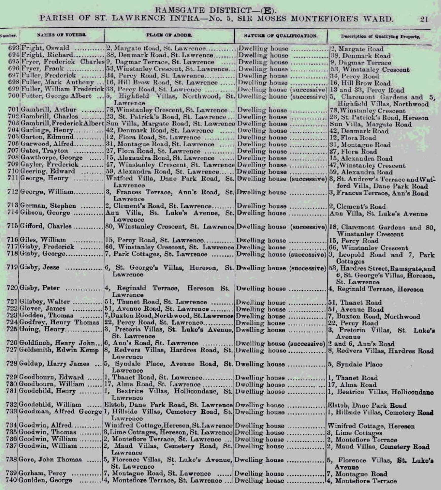
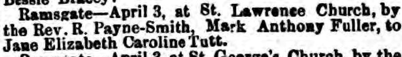
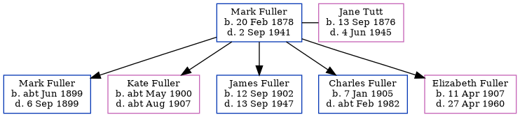

Mark Anthony Fuller 1878 - 1941
[ Home ] | [ Calendar ] | [ Surnames Index ] | [ Family History ]Mark Fuller, the husband of Jane Eliza Caroline Tutt (the first cousin twice-removed on the father's side of Nigel Horne), was born in Minster, Thanet, Kent, England on Feb 20, 18781, was baptized there at St Mary the Virgin on Nov 3, 1878 and married Jane (a general servant with whom he had 5 children: Mark Anthony, Kate Rosaline, James Richard Edmund, Charles Thomas and Elizabeth Rebecca) in St Lawrence, Thanet, Kent, England on Apr 3, 18992.
Throughout his life, Mark lived in several places: at 16 Hill Brow Road, St Lawrence in Thanet in 1903; at 22 Central Road, Ramsgate, Kent on Apr 2, 19113; and at 3 Central Road, Ramsgate, Kent on Jun 19, 19214. Mark In 1921 he was working at Repairer, miner laborer at Chislet Colliery, Sturry, Kent, England.
He died on Sep 2, 1941 in Toronto, Ontario, Canada.
Children
- Mark Anthony was born c. Jun 1899
- Kate Rosaline was born c. May 1900
- James Richard Edmund was born on Sep 12, 1902
- Charles Thomas was born on Jan 7, 1905
- Elizabeth Rebecca was born on Apr 11, 1907
Citations
- Kent, Canterbury Archdeaconry marriages 1538-1928 - Findmypast
- Kent, Canterbury Archdeaconry Marriages - Findmypast
- 1911 Census for England & Wales - Findmypast (was age 34 and the head of the household)
- 1921 Census Of England & Wales - Findmypast (was age 43 and the head of the household)
Media
Mark Fuller - 1903 Voters List

Thanet Advertiser April 8, 1899

1911 Census for England & Wales - GBC/1911/RG14/04529/0509/5
Kent, Canterbury Archdeaconry marriages 1538-1928 - GBPRS/CANT/M/97022325/1
England & Wales marriages 1837-2008 - BMD/M/1899/2/AZ/000137/065
England Marriages 1538-1973 - R_848395557
1911 Census for England & Wales - GBC/1911/RG14/04529/0509/1
England & Wales births 1837-2006 - BMD/B/1878/1/AZ/000202/011
1901 England, Wales & Scotland Census - GBC/1901/0007457503
England Births & Baptisms 1538-1975 - R_884575934
Kent Baptisms - GBPRS/CANT/B/96511791
1921 Census Of England - GBC-1921-RG15-04482-0639-01
Family Tree
Generated by ged2site. Last updated on Nov 13, 2024